Two-dimensional data
 on a rectangular grids
on a rectangular grids  is read
from the G_EQDSK file (G-file) of EFIT code. Based on the 2D array data, I
use 2D cubic spline interpolation to construct a interpolating function
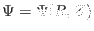. To construct a magnetic surface coordinate system, we need to
find the contours of
is read
from the G_EQDSK file (G-file) of EFIT code. Based on the 2D array data, I
use 2D cubic spline interpolation to construct a interpolating function
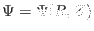. To construct a magnetic surface coordinate system, we need to
find the contours of  , i.e., magnetic surfaces. The values of on
the magnetic axis, 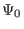, and the value of on the last closed flux
surface (LCFS), 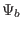, are given in G-file. Using these two values, I
construct a 1D array ``psival'' with value of elements changing uniform from
to . Then I try to find the contours of with contour
level value ranging from to . This is done in the following
way: construct a series of straight line (in the poloidal plane) that starts
from the location of the magnetic axis and ends at one of the points on the
LCFS. Combine the straight line equation, 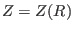, with the interpolating
function
, we obtain a one variable function
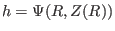. Then finding the location where is equal to a specified value
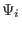, is reduced to finding the root of the equation
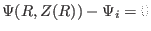. Since this is a one variable equation, the root can be easily
found by using simple root finding scheme, such as bisection and Newton's
method (bisection method is used in GTAW code). After finding the the roots
for each value in the array ``psival'' on each straight lines, the process of
finding the contours of is finished. The contours of found this
way are plotted in Fig. 8.
, i.e., magnetic surfaces. The values of on
the magnetic axis, 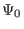, and the value of on the last closed flux
surface (LCFS), 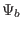, are given in G-file. Using these two values, I
construct a 1D array ``psival'' with value of elements changing uniform from
to . Then I try to find the contours of with contour
level value ranging from to . This is done in the following
way: construct a series of straight line (in the poloidal plane) that starts
from the location of the magnetic axis and ends at one of the points on the
LCFS. Combine the straight line equation, 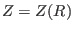, with the interpolating
function
, we obtain a one variable function
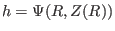. Then finding the location where is equal to a specified value
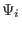, is reduced to finding the root of the equation
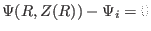. Since this is a one variable equation, the root can be easily
found by using simple root finding scheme, such as bisection and Newton's
method (bisection method is used in GTAW code). After finding the the roots
for each value in the array ``psival'' on each straight lines, the process of
finding the contours of is finished. The contours of found this
way are plotted in Fig. 8.
Figure 8:
Verification of the numerical code that calculates
the contours of the poloidal flux . The bold line in the figure
indicates the LCFS. The contour lines (solid lines) given by the gnuplot
program agrees well with the results I calculate by using interpolation and
root-finding method (the two sets of contours are indistinguishable in this
scale). My code only calculate the contour lines within the LCFS, while
those given by gnuplot contains additional contour lines below the X point
and on the left top in the figure. Eqdisk file of the equilibrium was
provided by Dr. Guoqiang Li (filename: g013606.07104).
| 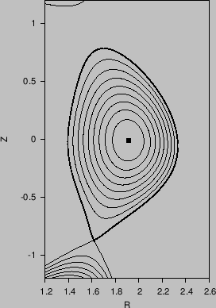 |
In the above, we mentioned that the point of magnetic axis and points on the
LCFS are needed to construct the straight lines. In G-file, points on LCFS are
given explicitly in an array. The location of magnetic axis is also explicitly
given in G-file. It is obvious that some of the straight lines
that pass through the location of magnetic axis and points on the LCFS will
have very large or even infinite slope. On these lines, finding the accurate
root of the equation
is difficult or even
impossible. The way to avoid this situation is obvious: switch to use function
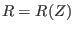 instead of when the slope of is large (the
switch condition I used is
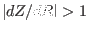).
In constructing the flux surface coordinate with desired Jacobian, we will
need the absolute value of the gradient of ,
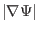, on some
specified spatial points. To achieve this, we need to construct a
interpolating function for
. The
can be
written as
By using the center difference scheme to evaluate the partial derivatives with
respect to  and 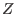 in the above equation (using one side difference scheme
for the points on the rectangular boundary), we can obtain an 2D array for the
value of
on the rectangular grids. Using this 2D
array, we can construct an interpolating function for
by using
the cubic spline interpolation scheme.
and 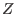 in the above equation (using one side difference scheme
for the points on the rectangular boundary), we can obtain an 2D array for the
value of
on the rectangular grids. Using this 2D
array, we can construct an interpolating function for
by using
the cubic spline interpolation scheme.
Figure 9:
Grid points (the intersecting points of two curves in the figure)
corresponding to uniform poloidal flux and uniform poloidal arc length for
EAST equilibrium shot 13606 at 7.1s (left) (G-file name: g013606.07104) and
shot 38300 at 3.9s (right) (G-file name: g038300.03900).
| 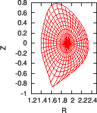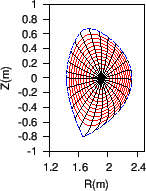 |
Figure 10:
as a function of the poloidal angle. The
different lines corresponds to the values of
on different
magnetic surfaces. The stars correspond to the values on the boundary
magnetic surface while the plus signs correspond to the value on the
innermost magnetic surface (the magnetic surface adjacent to the magnetic
axis). The equilibrium is for EAST shot 38300 at 3.9s.
| 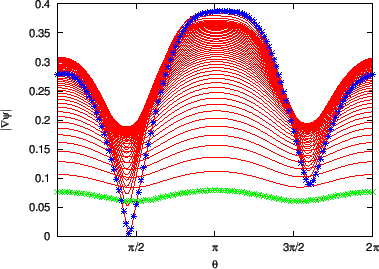 |
Figure 11:
The Poloidal magnetic field
 (left) and
toroidal magnetic field
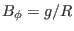 (right) as a function of the
poloidal angle. The different lines corresponds to the values on different
magnetic surfaces. The stars correspond to the values on the boundary
magnetic surface while the plus signs correspond to the value on the
innermost magnetic surface (the magnetic surface adjacent to the magnetic
axis). The equilibrium is for EAST shot 38300 at 3.9s.
(left) and
toroidal magnetic field
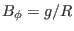 (right) as a function of the
poloidal angle. The different lines corresponds to the values on different
magnetic surfaces. The stars correspond to the values on the boundary
magnetic surface while the plus signs correspond to the value on the
innermost magnetic surface (the magnetic surface adjacent to the magnetic
axis). The equilibrium is for EAST shot 38300 at 3.9s.
| 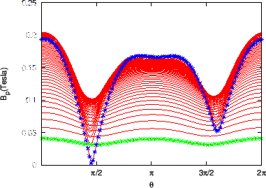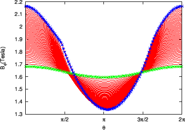 |
Figure 12:
Equal-arc Jacobian as a function of the poloidal angle on different
magnetic surfaces. The dotted line corresponds to the values of Jacobian on
the boundary magnetic surface. The equilibrium is for EAST shot 38300 at
3.9s.
| 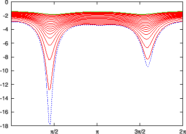 |
Figure 13:
as a function of the poloidal angle. The
different lines corresponds to values of
on different
magnetic surfaces. The stars correspond to the values of
on the boundary magnetic surface while the plus signs correspond to the
value on the innermost magnetic surface (the magnetic surface adjacent to
the magnetic axis). The equilibrium is a Solovev equilibrium.
| 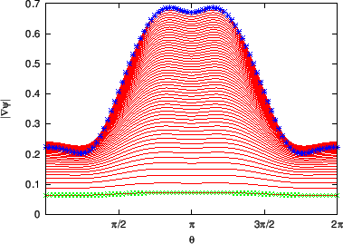 |
Figure 14:
Jacobian on different magnetic surfaces as a function of the
poloidal angle. The equilibrium is a Solovev equilibrium and the Jacobian is
an equal-arc Jacobian. The stars correspond to the values of Jacobian on the
boundary magnetic surface while the plus signs correspond to the value on
the innermost magnetic surface (the magnetic surface adjacent to the
magnetic axis).
| 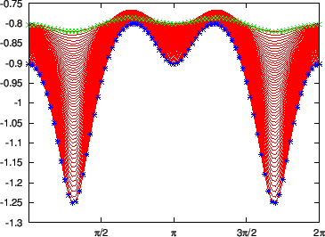 |
yj
2018-03-09